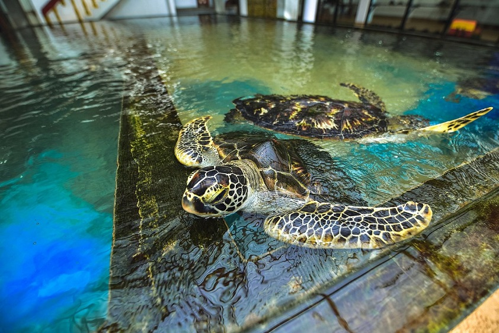
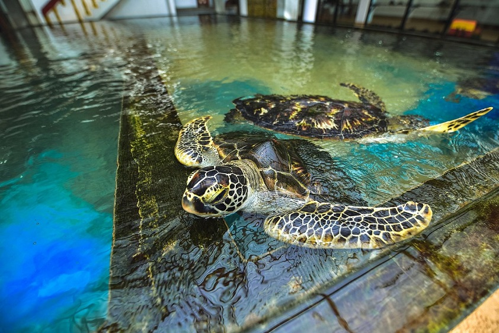

Hikkaduwa Turtle Hatchery-Experience the Wonder of Turtle Population
 

Welcome to the Hikkaduwa Turtle Hatchery, a conservation project dedicated to protecting the turtle population in Sri Lanka. The hatchery is located in the beautiful town of Hikkaduwa, on the southern coast of Sri Lanka. It is a great place to visit for those interested in learning more about sea turtles and their conservation. At the hatchery, visitors can observe the turtle conservation efforts and learn about the various species of turtles found in Sri Lanka. You can also witness the hatchery's efforts to protect turtle eggs from poachers and natural predators. Additionally, you can see the baby turtles hatching and being released into the ocean, which is an amazing experience.